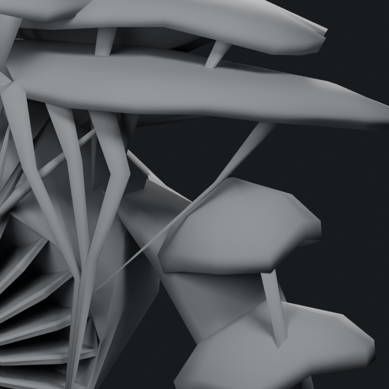
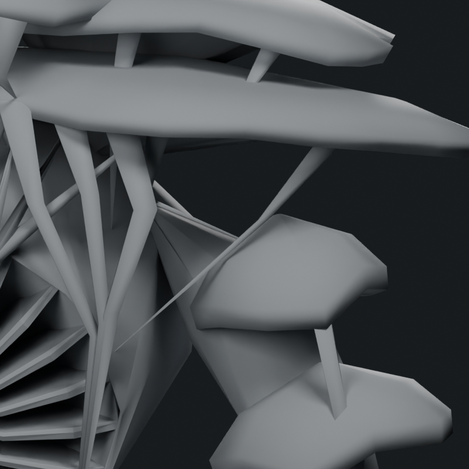
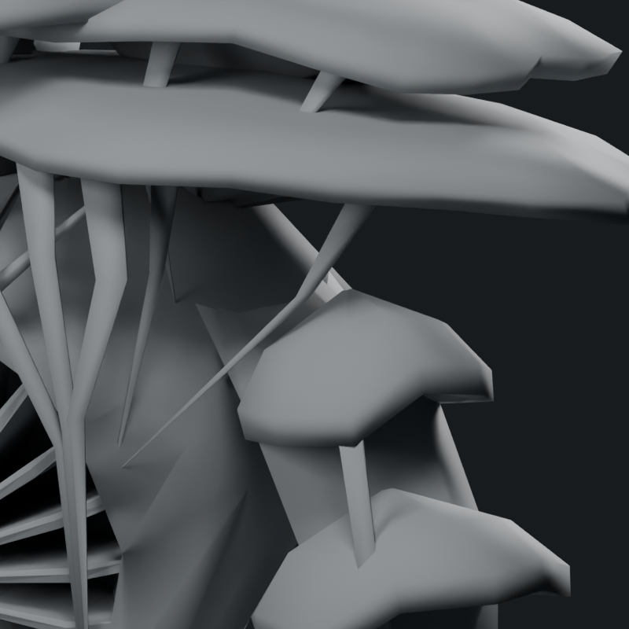
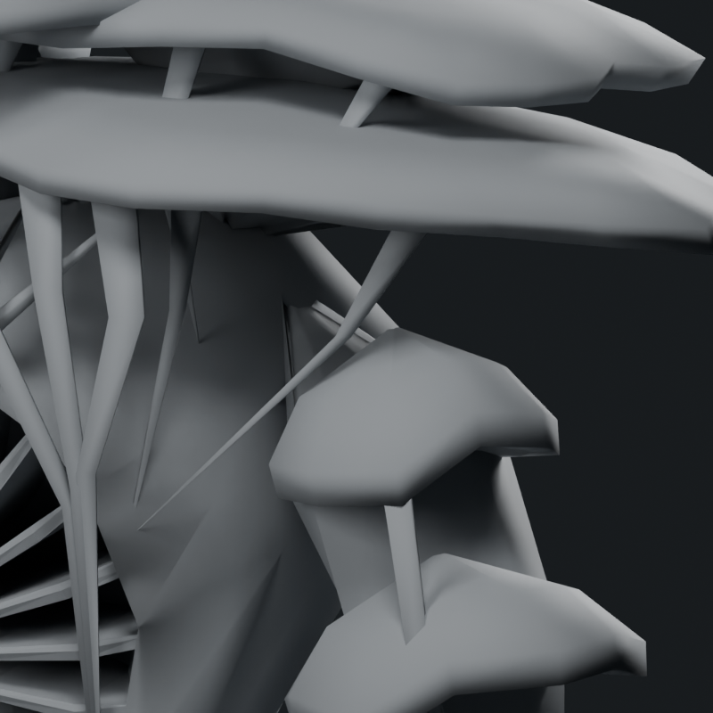
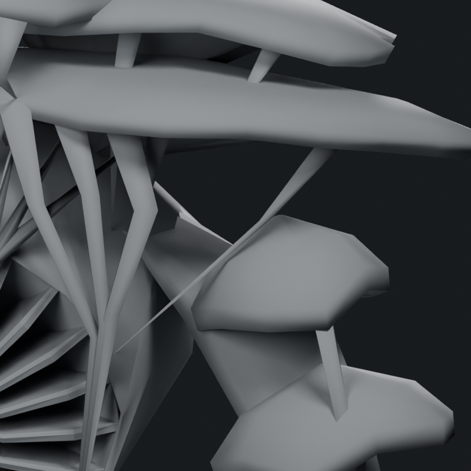
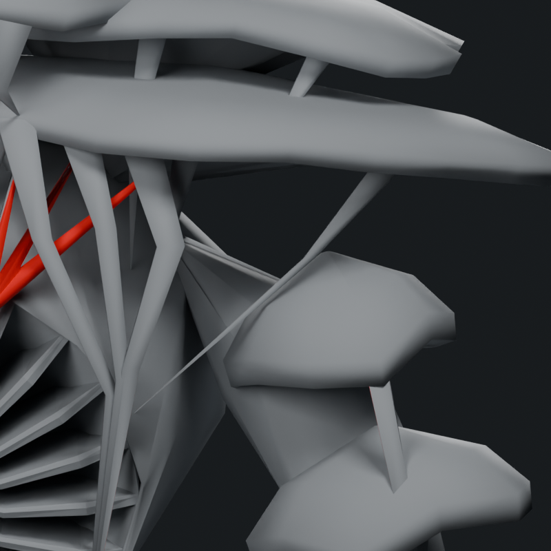
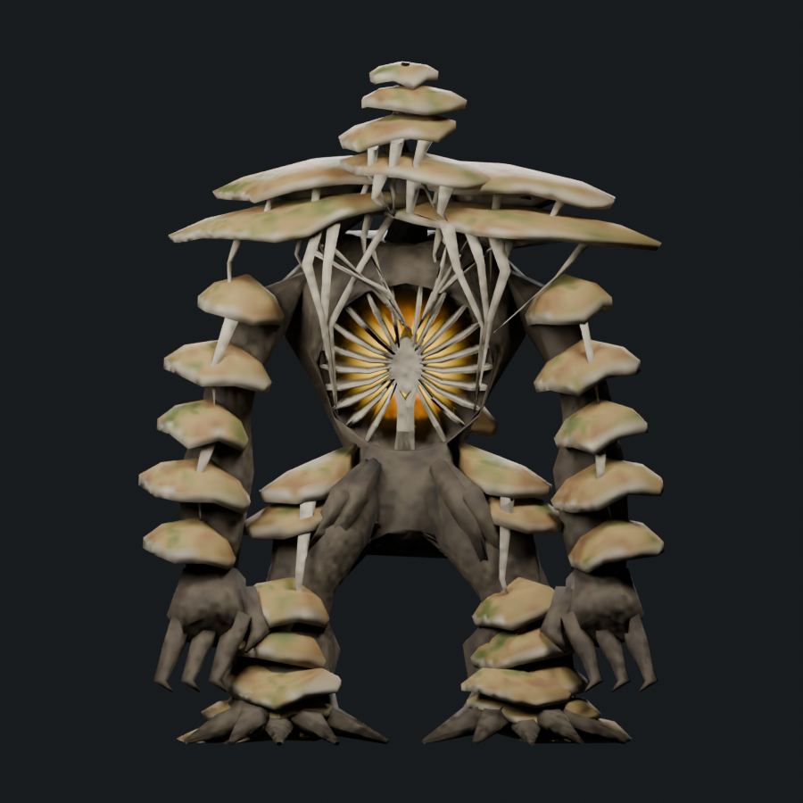
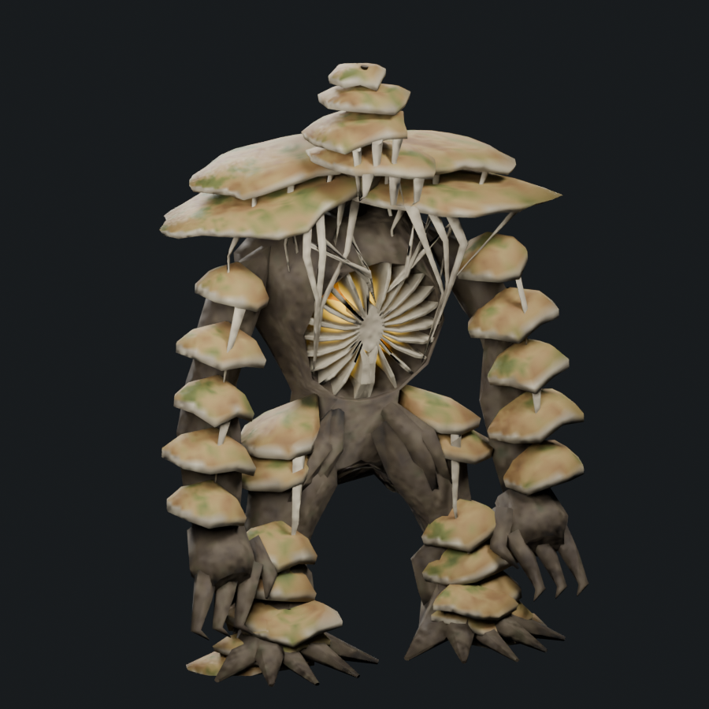
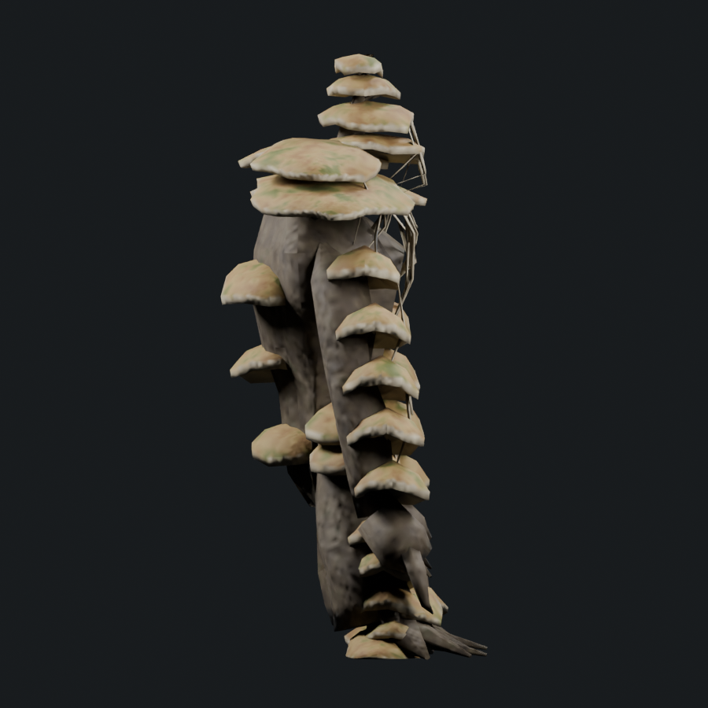
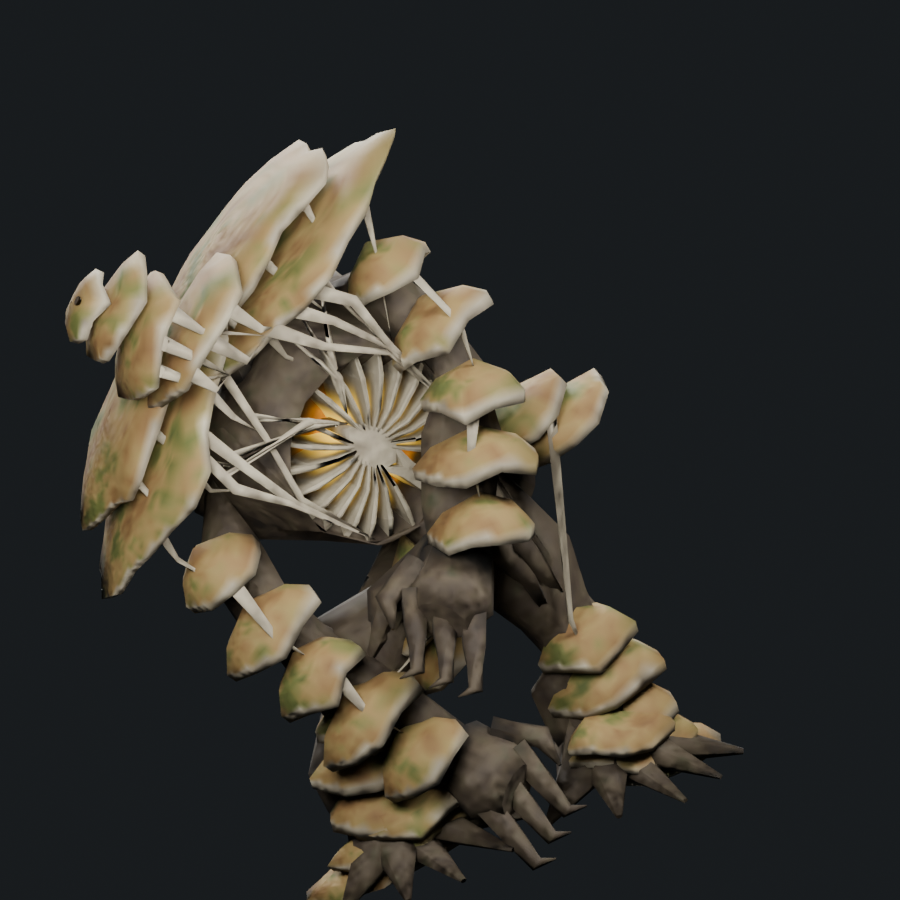

The pinched shoulder polygon was visible in both the trimmed and untrimmed revision 21 mesh. Its arm-root closing face spanned a nonplanar loop. Both arm roots now use a planar closing patch seated inside one rigid torso face, with consistently ordered transition rings. The nearby tissue contacts are reseated. Forty interior samples per closing patch are checked, in addition to its boundary vertices.
8,846 triangles · 1.425× Troll · soft cap 9,309
One mesh, one material, four 512px atlas maps. No new triangles were added. Reauditing buried faces leaves 8,846 triangles, 16 fewer than revision 21. The head and shoulder mushroom bundles, beard, chest, hips and lower limbs retain their preceding shapes.
Offline geometry, export, 157 attachment records and five attack-pose contact samples pass. Buried-face retention was checked at 50 samples across ten actions. This remains an uninstalled art study; full animation and live performance acceptance are pending.







Original root-loop diagnostic · Closing patch repair



